CrossMadagascar
Découvrez l’aventure moto à Madagascar avec notre circuit CrossMadagascar : Enfourchez une moto chinoise et traversez Madagascar en off-road avec un guide expérimenté ! Vous n’oublierez JAMAIS notre CrossMadagascar…
Lire la suite →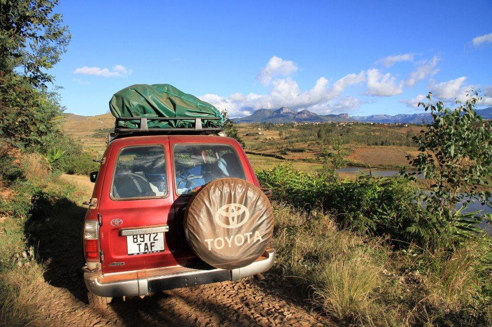
Nous avons le plaisir de vous proposer différents itinéraires sur mesure à Madagascar. En raison de la grande superficie de l’île, il n’est pas possible de découvrir tout le pays lors d’un seul voyage… Il est donc indispensable d’arrêter son choix sur certaines parties de Madagascar.
Nous avons ainsi mis en place différents itinéraires et programmes de voyages individuels particulièrement intéressants, qui vous permettront de découvrir Madagascar hors des circuits habituellement proposées aux visiteurs !
Ces propositions peuvent être une source d’inspiration pour vous permettre de préparer un premier jet de programme, que nous discuterons volontiers avec vous, afin de vous proposer un voyage à Madagascar sur mesure
Mais aussi… nos programmes libres avec chauffeur, pour un déplacement sans souci et tout inclus !
Découvrez l’aventure moto à Madagascar avec notre circuit CrossMadagascar : Enfourchez une moto chinoise et traversez Madagascar en off-road avec un guide expérimenté ! Vous n’oublierez JAMAIS notre CrossMadagascar…
Lire la suite →Madagascar, la Grande Ile de l’Océan Indien, possède des parcs nationaux dont les formes de vie sont apparues au cours de millions d’années d’isolement. Grâce à cette “bénédiction de l’isolement”, la flore et la faune ont eu tout le temps de se développer d’une manière très différente du reste du monde. Raison suffisante pour que Madagascar mérite amplement le nom de 7ème continent.
Lire la suite →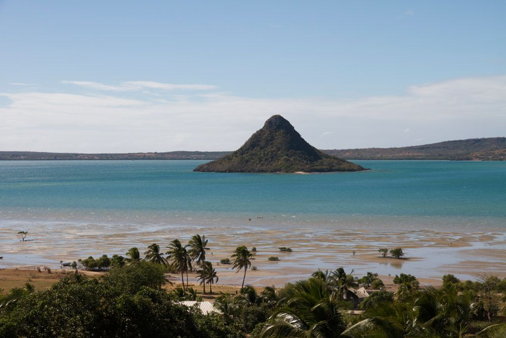
Dans cet itinéraire, nous allons découvrir les différentes facettes du nord de Madagascar.
Lire la suite →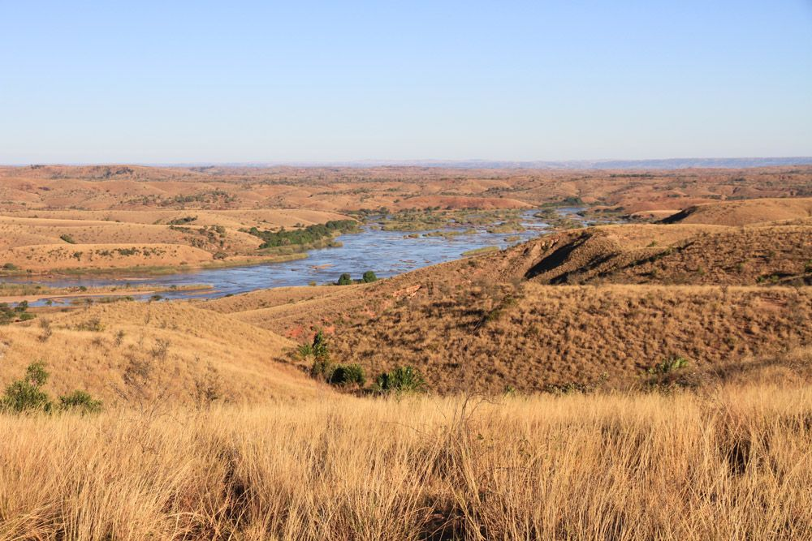
Ce voyage aux multiples facettes nous emmène en diagonale à travers Madagascar en 14 jours… Quelles découvertes !
Lire la suite →
Le Nord de Madagascar est la destination ultime de cet intense voyage de 20 jours…
Lire la suite →
Au cours de ce périple intensif et complet, nous apprenons à mieux connaître le Sud-Est de Madagascar.
Lire la suite →
Après avoir traversé les Hauts-Plateaux malgaches, cap sur la Côte Ouest de Madagascar, si diversifiée…
Lire la suite →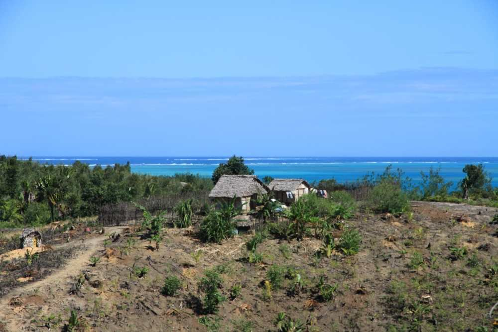
Sur l’une des plus anciennes lignes de chemin de fer encore existantes à Madagascar, vous ferez l’expérience d’un trajet en train à la malgache … Ambiance garantie : contact avec les Malgaches toujours ouverts et hospitaliers, aussi bien dans le train qu’au passage des villages en plein cœur de la forêt tropicale !
Lire la suite →
Elle est aussi appelée le triangle de la vanille. Un peu oubliée, mais si variée… C’est une région verte, tropicale, qui abrite la plus importante zone de culture de vanille au monde .
Lire la suite →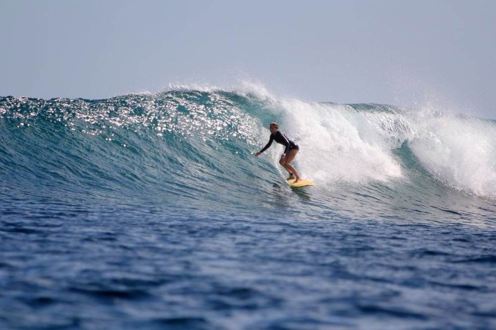
A la recherche d’un type de sport spécifique à exercer dans un environnement un peu rudimentaire ? Madagascar offre des opportunités intéressantes !
Lire la suite →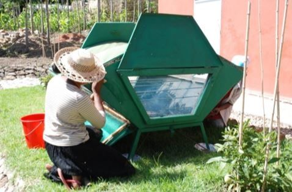
Il s’agit d’un voyage solidaire, organisé par l’ONG neuchâteloise, le Centre Ecologique Albert Schweizer (CEAS) en partenariat avec PRIORI Antananarivo.
Lire la suite →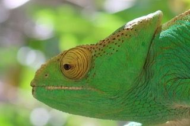
Osez un Voyage-surprise à Madagascar ! Offrez-nous 2 semaines de votre temps sur place à Madagascar, nous nous occupons du reste !
Lire la suite →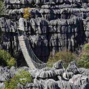
Notre visite démarre à l’extrême pointe nord du pays. La Montagne d’Ambre, si verte et si fertile, est fascinante, car elle présente une diversité incroyable de paysages.
Lire la suite →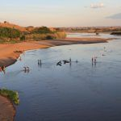
D’ouest en est, Au départ de Majunga, dans le Nord-Ouest fertile et chaud, nous traversons les Hauts-Plateaux malgaches, où le vent fait onduler hautes herbes et rizières… Nous admirons les superbes maisons en latérite rouge, avant de redescendre la falaise vers la Côte Est. Sans oublier de découvrir la fascinante flore et faune de la forêt tropicale humide. Enfin, voici le temps d’un repos bien mérité sur l’idyllique île de Sainte Marie, avec ses plages bordées de palmiers…
Lire la suite →
Traverser les immenses savanes et découvrir la forêt sèche de l’Ouest et ses lémuriens endémiques, visiter une étonnante île-prison tant redoutée dans le passé…
Lire la suite →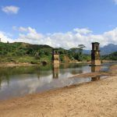
Après l’idyllique ville côtière malgache de Fort-Dauphin, nous partons à la découverte d’étendues côtières pittoresques… Les contreforts de la chaîne de montagnes de l’Est, suivis des marécages puis des embruns de l’Océan Indien. Sans oublier les nombreux villages de pêcheurs, les forêts d’épineux et des réserves naturelles peu fréquentées…
Lire la suite →
Ambiance garantie : contact avec les Malgaches toujours ouverts et hospitaliers, aussi bien dans le train qu’au passage des villages en plein cœur de la forêt tropicale !
Lire la suite →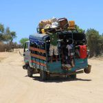
Nous marchons dans les exceptionnelles sculptures en pierre calcaire des Tsingy, émerveillés par les baobabs géants et les nombreux animaux endémiques : le Fosa – cette civette rare -, les lémuriens de Madagascar, ou encore les caméléons, bien camouflés le long du chemin…
Lire la suite →PRIORI Reisen GmbH · Holeestrasse 6 · 4054 Basel